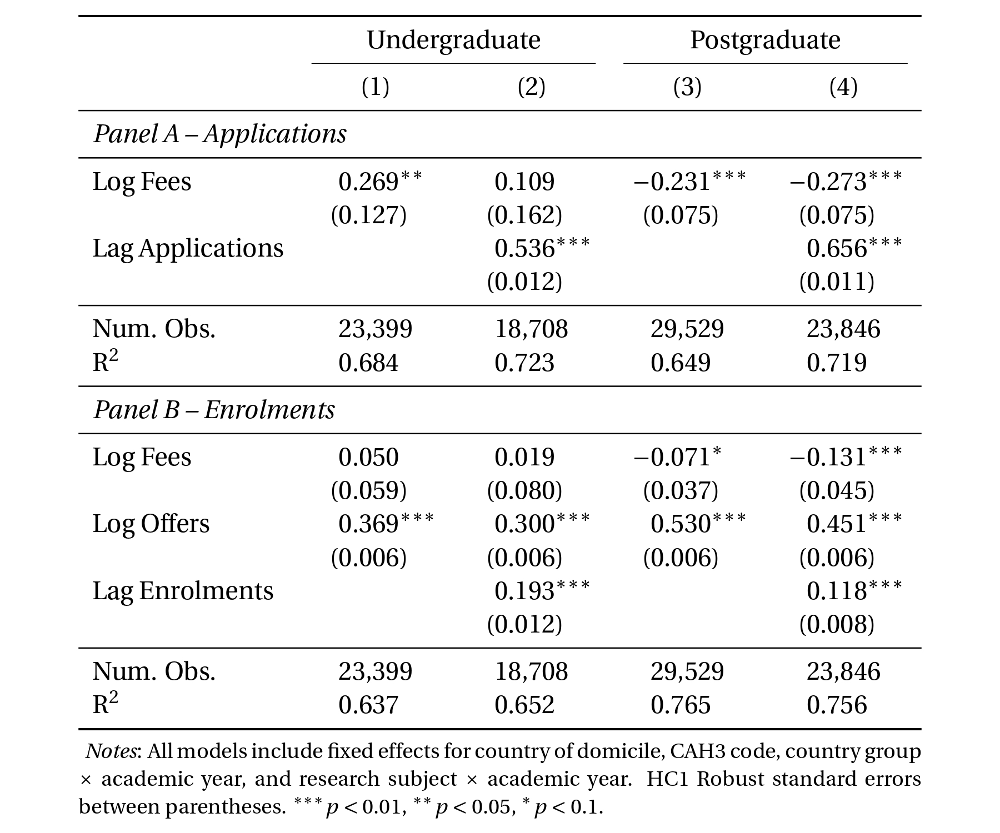

Abstract: Tuition fees are a critical source of revenue for universities, yet how student demand
responds to changes in fees remains poorly understood. Using administrative data from one of the largest UK
universities between 2019 and 2025, we estimate the price elasticity of demand for both undergraduate and
postgraduate degrees. Our analysis distinguishes between the application and enrolment stages, accounts for
persistence in demand across cohorts, and incorporates fee data from competitor institutions to estimate
cross-price elasticities. We find that postgraduate students are substantially more price-sensitive than undergraduates,
with estimated elasticities of -0.27 for applications and -0.13 for enrolments. Undergraduate demand is largely price-inelastic.
Elasticities vary sharply across countries: applicants from emerging markets such as India, Indonesia, and Turkey display positive
application elasticities—consistent with tuition functioning as a signal of quality—while students from Europe and the
Americas exhibit conventional price sensitivity. Subject-level variation is more muted: demand for engineering and other STEM
disciplines is effectively inelastic, consistent with high expected earnings, while other subjects display stronger negative
elasticities. We also document strong persistence in demand across cohorts within countries, suggesting peer-driven information
spillovers. Finally, we find limited responsiveness to competitors' tuition at the application stage but positive cross-price
elasticity at enrolment, indicating substitution effects once offers are received. These results provide the most comprehensive
and recent evidence on tuition responsiveness in UK higher education, highlighting how price sensitivity differs across stages,
markets, and subjects.